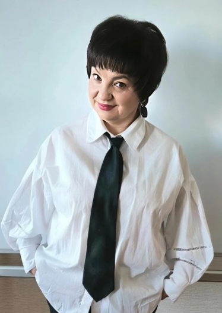

IT технологии и ЭКОдизайн
Мы учим детей 7–14 лет основам программирования, графического дизайна и работе с нейросетями. Вдохновляемся природой и создаём цифровое искусство.
сказать «Привет, я люблю природу!»
повторить 5 раз
нарисовать_цветок
Пример кода в Scratch — наши первые шаги
Программирование
Scratch, основы алгоритмов, создание игр и анимаций.
Графический дизайн
Photoshop, Pixilart, GIMP, Krita — от пиксель-арта до сложных композиций.
Нейросети
Знакомство с искусственным интеллектом, генерация изображений, оживление персонажей.
Команда и поддержка
Занятия в небольших группах (8–10 человек) на современных компьютерах в уютной атмосфере. Индивидуальный подход к каждому.
history История кружка
Основание. Кружок открылся при экологическом центре «Росток». С самого начала занятия ведёт педагог высшей категории Яцевич Светлана Юрьевна.
Республиканская выставка. Участие в выставке научно-методической литературы. Демонстрация работы робота MatataLab.
Выставка «Оживающие персонажи». Во Дворце республики (галерея Института культуры) с помощью ИИ мы «оживили» картины учащихся студии «Флории». Уникальный проект!
Скоро 40 лет! Наш кружок продолжает расти, снимать видео, создавать онлайн-спектакли, клипы и радовать творчеством.
person Преподаватель

Яцевич Светлана Юрьевна verified
Светлана Юрьевна ведёт кружок с момента его основания. Она верит, что каждый ребёнок имеет свой талант, и находит индивидуальный подход к каждому ученику. Под её руководством ребята не только осваивают IT и дизайн, но и раскрываются как сценаристы, актёры, режиссёры – настоящие творческие личности.
collections Фотогалерея
Яркие моменты наших занятий и компьютерных проектов →
emoji_events Наши достижения и проекты
2023 и 2026 годы – Республиканская выставка научно-методической литературы. Демонстрировали работу робота MatataLab.
2026 год – выставка во Дворце республики (галерея Института культуры). С помощью ИИ мы «оживили» картины учащихся студии «Флории».
Наш кружок снимает многочисленные видео: онлайн-спектакли, поздравления с праздниками, клипы и ролики. Учащиеся выступают как сценаристы, актёры и режиссёры.
Компьютерные проекты наших учеников связаны с природой и экологией. Защита проектов – важная часть обучения, где ребята демонстрируют свои знания и возможности.
menu_book Что изучаем
directions Как к нам добраться
ЭкоЦентр «Росток» находится по адресу: Минск, ул. Макаёнка, 8.
Проложить маршрут
Введите вашу точку отправления (город, улица, дом):